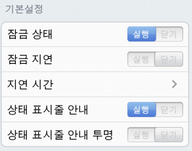
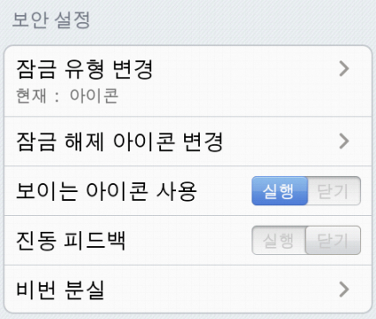
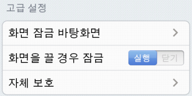

스마트 록 실행/닫기（만일 만일 잠금 해제 아이콘을 설정하지 않으실 경우, 자금 기능을 실행할 경우, 잠금 해제 아이콘을 설정해야 합니다）.
일정한 잠금 지연 시간내에 보호받는 프로그램은 다시 아이콘 잠금 해제를 할 필요가 없습니다.
귀하의 잠금시간 지연 설정.
상태 표시줄에 스마트 록 상태 표출 여부. 기능 실행할것을 권장하며 스마트 록이 작업 관리자로부터 강제적으로 정지시켜 보호 기능 효력이 상실되지 않도록 하십시오.
상태 표시줄 안내 아이콘 투명 설정.

아이콘 록, PIN록 또는 비밀번호 록 사용.
잠금 해제 아이콘 , PIN 또는 비밀번호 변경.
잠금 해제 아이콘 잠금상태에서 아이콘 표출 여부.
아이콘 잠금장치 입력시 진동 피드백 설정 여부.
잠금 해제 재설정 문제 설정, 비밀번호를 잊으실 경우, 잠금 해제 아이콘 재설정.

좋아하시는 잠금 화면 바탕화면을 선택하십시오
휴대폰 화면을 끌때 보호받는 어플리케이션 다시 잠금.
시스템 프로그램 관리 여부 선택 및 android시장 자체 보호 기능 구현（기본 설정으로는 전부 잠금상태임）.